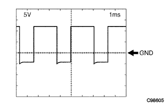
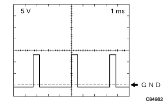
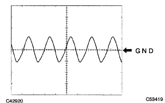

Electronic control type automatotlanthransxle [ECT] system (U340F) ECU terminal sequence |
| Terminal symbol [Terman number] | Input and output | item | Measurement conditions | Reference value |
|---|---|---|---|---|
| E02 ← → Body Earth [A6] | - | Conduction | Always | There is an conductor |
| E01 ← → Body Earth [A7] | - | Conduction | Always | There is an conductor |
| SLT+← → SLT- [A17 ← → A16] | output | Waveform | Engine idol rotation | Waveform 1 |
| VC ← → E2 [A18 ← → A28] | output | Voltage | Stop engine, IG switch ON | 4.5-5.5V |
| E2 ← → Body Earth [A28] | - | Conduction | Always | There is an conductor |
| OIL ← → E2 [A30 ← A28] | input | Voltage | Transxle oil temperature 10-145 ° C | 4-0V |
| E1 ← → Body Earth [B7] | - | Conduction | Always | There is an conductor |
| ST ← → E1 [B12 ← → B7] | output | Voltage | Shift lever D range (3 ← → 4 gears) | 0-1.5V → 9-14V |
| S2 ← → E1 [B14 ← → B7] | output | Voltage | Vehicle stopped, shift lever N range → D range | 0-1.5V → 9-14V |
| S1 ← → E1 [B15 ← → B7] | output | Voltage | Vehicle stopped, shift lever N range → D range | 0-1.5V → 9-14V |
| SLU+← → Slu- [B19 ← → B18] | output | Waveform | Engine idol rotation | Waveform 2 |
| NT+← → NT- [B27 ← → B35] | input | Waveform | Car speed about 20km/h driving | Waveform 3 |
| L ← → E1 [C8 ← → B7] | input | Voltage | Shift lever L range | 7.5-14V |
| L ← → E1 [C8 ← → B7] | input | Voltage | Other than shift lever L range | 0-1.5V |
| 2 ← → E1 [C9 ← → B7] | input | Voltage | Shift lever 2 range | 7.5-14V |
| 2 ← → E1 [C9 ← → B7] | input | Voltage | Other than Soft Lever 2 range | 0-1.5V |
| D ← → E1 [C10 ← → B7] | input | Voltage | Shift lever D range | 7.5-14V |
| D ← → E1 [C10 ← → B7] | input | Voltage | Other than shift lever D range | 0-1.5V |
| R ← → E1 [C11 ← → B7] | input | Voltage | Shift lever R range | 7.5-14V |
| R ← → E1 [C11 ← → B7] | input | Voltage | Other than shift lever R range | 0-1.5V |
| STP ← → E1 [C19 ← → B7] | input | Voltage | Step on the brake pedal (switch ON) | 7.5-14V |
| STP ← → E1 [C19 ← → B7] | input | Voltage | Release the brake pedal (switch OFF) | 0-1.5V |
| 3 ← → E1 [C21 ← → B7] | input | Voltage | Shift lever 3 range | 7.5-14V |
| 3 ← → E1 [C21 ← → B7] | input | Voltage | Except for the shift lever 3rd range | 0-1.5V |
| +B ← → E1 [D1 ← → B7] | input | Voltage | Stop engine, IG switch ON | 9-14V |
| Batt ← → E1 [D3 ← → B7] | input | Voltage | Always | 9-14V |
|  |
Waveform 1 (line pressure control solenoid ASSY [SLT])
| item | Content |
|---|---|
| Measuring terminal | SLT+← → SLT- |
| Instrument set | 5V/Div 1ms/Div |
| Measurement conditions | Engine idol rotation |
|  |
Waveform 2 (lock -up control solenoid [SLU])
| item | Content |
|---|---|
| Measuring terminal | SLU+← → Slu- |
| Instrument set | 5V/Div 1ms/Div |
| Measurement conditions | Engine idol rotation |
|  |
Waveform 3 (Transmission Revolution Sensor [NT])
| item | Content |
|---|---|
| Measuring terminal | NT+← → NT- |
| Instrument set | 2V/Div 1ms/Div |
| Measurement conditions | Car speed about 20km/h driving |